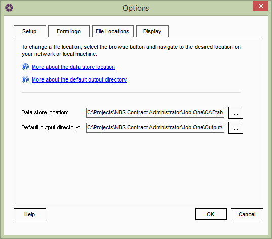
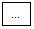

Options: File Locations tab |
The Options window allows users to configure NBS Contract Administrator to suit their preferences. To open the Options window select Tools > Options from the menu and select the File Locations tab.

Here the user can change the default locations for both the Data Store and Output Directory.
When NBS Contract Administrator is run for the first time, the user will be given the option to create a new Data Store or browse to an existing Data Store. To change the location of the default Data Store, select the browse button

next to the 'Data Store location:' field. Once the desired Data Store has been selected, click on the Open button then OK and the new Data Store will be loaded into NBS Contract Administrator.The default Output location is a directory where all of the users PDF's (issued Forms) will be created. To change the default Output directory, select the browse button next to the 'Default output directory:' field. Once the desired output directory has been selected, click the OK button and the default output directory will be changed.
See also:
Options - Setup tab
Options - Form Logo tab
Options - Display tab